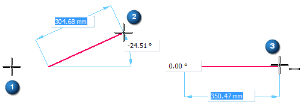

Example: Draw a line

-
Click the Line command.
-
Click where you want a new line to begin (1).
-
Move the cursor around in the profile window. Notice that the line follows the movement of the cursor (2). At the same time, IntelliSketch recognizes any relationships it encounters, such as a horizontal orientation (3). When it finds a relationship, IntelliSketch displays a relationship indicator at the cursor.
-
Click to place the end point of the line according to the displayed relationship.
Tip:To snap to an intersection point or a keypoint, locate the element(s) with the cursor and then press one of these shortcut keys.
-
Midpoint of a line or arc – Press M.
-
Intersection point of lines, circle, curves, and arcs – Press I.
-
Center point of a circle or arc – Press C.
-
Endpoint of a line, arc, or curve – Press E.
For intersection points—If there are multiple eligible points located, then QuickPick opens and lists them. In QuickPick, click to select the point you want.
-
How do I
Draw with IntelliSketchExample: Draw a horizontal line
Example: Draw a line connected to another line
Example: Draw an arc
Example: Establish More Than One Relationship
Example: Case Where a Relationship Is Not Maintained
Suspend or remove geometric relationships
Look up more details
IntelliSketch commandAlignment Indicator command
Locate Background command